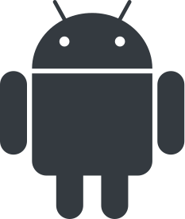
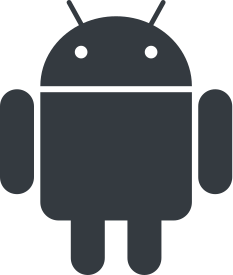

Mobile Engineer passionate about the combination between robust software, a beautiful UI and a great UX.
Also cinephile, football addict, soundtrack lover, meme laughter and science fan.
My programming journey started when I was 14 years old, exploring the wonderful world of possibilities that were opened when my first "Hello, world!" was written.
The first two programming languages that I took the time to learn were Java and C. After that, back in 2015, my mobile development experience began, starting by developing Android apps and then migrating to iOS. During this period I also had many experiences with React Native and Flutter.
I was fortunate to spend two years at the Apple Developer Academy, where I had the opportunity to explore almost every Apple framework (UIKit, WatchKit, AppKit, CoreML, CreateML, ARKit, CloudKit, CoreData and many, many others) available, developing and releasing more than 10 apps to the App Store. Alongside with that, I have improved my soft skills, by having a lot of different apps presentations and research approaches.
 



Solution idealized and implemented to be used inside hospitals, automatizing the chemotherapy procedures control.
In 2019 I was one of the students around the world who was chosen to win the Apple's WWDC19 Scholarship.
My project was the development of a game called "Gameception", which is a game inside another game! You have to play it thinking about two different behaviors and controls, making it a fun and difficult experience.
You start the game by chosing the "Portals" icon on the phone seen on the screen, and then it starts. Basically you are the player holding the smartphone, so you need to move arund picking up actions that will reflect in the game on the right, which represents the "Portal" game chosen at the beginning.